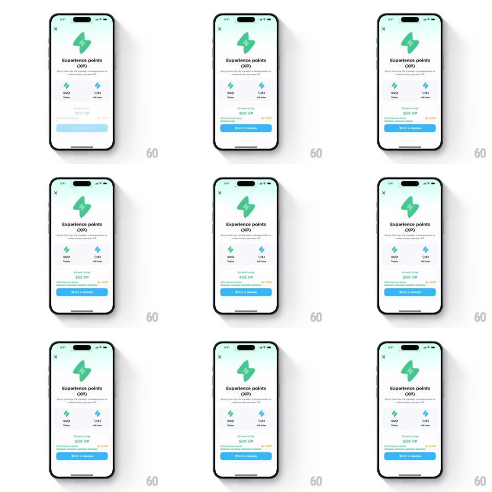

Media
Frame-by-frame

Rebuild this interaction 1:1: Airlearn's experience-points screen entrance - the XP sheet fades in from blank, the lightning-bolt hero and stats populate, and the "Earned today" counter ticks up while its progress bar fills.

Rebuild this interaction 1:1: Airlearn's experience-points screen entrance - the XP sheet fades in from blank, the lightning-bolt hero and stats populate, and the "Earned today" counter ticks up while its progress bar fills.
## Integration
Integration: stack-agnostic spec - springs given as stiffness/damping, timed motions as duration + curve; map every value to your framework and animation library of choice.
## Scene
Mobile sheet, near-white mint background, close X top-left. Centered green 3D lightning bolt, "Experience points (XP)" title, one-line explainer, two stat columns ("500 Today" with green bolt icon, "1,151 All-time" with blue bolt icon), an "Earned today" block with a green XP number, a progress bar toward "1,000", and a blue "Start a lesson" button.
## Motion spec
Pattern: count-up with synchronized progress fill on screen load.
- Whole sheet content fades in from blank (opacity 0 -> 1, 300ms, ease-out); the bolt settles with a small scale (0.95 -> 1).
- "Earned today" number counts up from 300 XP to 500 XP (~900ms, ease-out, integer ticks).
- The progress bar fill animates width in lockstep with the count (same 900ms ease-out), ending ~50% toward the 1,000 goal.
- Stats columns and the Start a lesson button fade in with the sheet and stay put.
## Calibration
- Number and bar must be driven by one shared progress value - any drift between them reads as a bug.
- Keep the count fast (under 1s); this is confirmation, not a celebration.
## Reduced motion
Sheet fades in (200ms) with final values shown - no count, no bar animation.
## Don't miss
- The green bolt (Today) and blue bolt (All-time) use different colors; do not reuse one icon tint.
- The bar goal label "1,000" sits at the bar's right end with a small bolt icon.